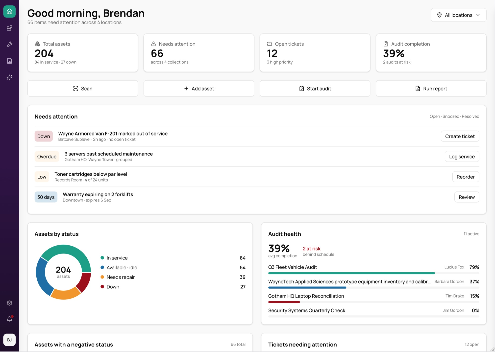

Asset Panda Pro
Product Designer
Enterprise asset management platform, designed from conception to product by a team of two designers.

Summary
We were two designers on Asset Panda Pro, and I worked closely with the lead designer on a 0 → 1 enterprise asset platform that now tracks millions of records for customers including Rio Tinto and Red Bull. The legacy product capped record counts, forced a flat data model, and had grown too bloated to navigate — so we rebuilt the information architecture from scratch and designed a no-code configuration layer that lets any industry (healthcare, construction, government, IT) model its own assets without a custom build. Together we designed across the web platform, the field-worker mobile app, AI tooling, and the design system that keeps them aligned.
- We replaced a capped, flat data model with configurable multi-level hierarchies — Rio Tinto now tracks 5M+ assets a day through parent–child relationships no competitor could support.
- We treated a 1–3 month client onboarding as a primary UX problem, shipping guided and AI-assisted implementation to cut time-to-value.
- We ended web/mobile drift by unifying both platforms behind one IA and one design system, giving field workers and desk admins the same mental model.
Role and responsibilities
Asset Panda Pro is an enterprise asset management platform built to help organizations track the location, status, and full lifecycle of physical assets across industries ranging from healthcare and government to construction and enterprise IT.
Working closely with the lead designer, I designed across the product from the initial concept through the feature set it has today: the web platform, the mobile app, AI-powered tooling, and the design system that ties it all together.
- Information architecture
- Helped build a scalable IA from scratch to support diverse industries, user types, and asset hierarchies.
- Jobs-to-be-done analysis
- Worked on identifying core user needs to define the foundational feature set and anchor early product decisions.
- Product strategy
- Helped translate executive direction into a coherent product vision that balanced business goals with user requirements.
- Design system
- Designed and maintained components, tokens, and patterns in a design system built from the ground up and used across every surface.
- Developer direction
- Prepared detailed handoffs and worked closely with engineering to ensure design intent carried through to production.
- Roadmap planning
- Worked with PMs and the design lead to define release priorities, scope upcoming features, and shape the long-term product roadmap.
Design challenge
Without sacrificing usability, build a single platform flexible enough to serve radically different users — a field technician scanning tools on a job site, a hospital administrator tracking medical equipment, an IT manager auditing thousands of devices across a global enterprise — without making the system feel complex to any of them.
- Handle millions of assets
- The data model had to support complex, nested asset structures at enterprise scale without sacrificing performance.
- Scaling from SMB to enterprise
- A single platform had to work equally well for a 10-person team and a Fortune 500 operation — with no separate builds.
- Limited record count
- Legacy architecture imposed record limits that conflicted with what enterprise clients actually needed to track.
- Industry-agnostic by design
- The product had to serve healthcare, construction, IT, government, and logistics — without being built for any single vertical.
- Forms & field configurability
- Users needed to freely position elements and customize data-entry layouts without developer involvement.
- Limited grouping structures
- The existing data organization was too flat — users couldn’t build multi-level hierarchies to match how their operations actually worked.
- Navigation complexity
- Feature accumulation had made the app bloated and hard to navigate — requiring a ground-up IA redesign to restore clarity at scale.
- Onboarding friction
- Getting clients fully operational took 1–3 months depending on company size — reducing time-to-value was a primary UX objective.
- Web & mobile design consistency
- The web and mobile products had drifted apart visually and structurally — a unified design system was needed to realign them.
- Mobile IA parity
- The mobile app had to mirror the full information architecture of the web platform so field workers and desk users worked from the same mental model.
How these shaped the work. These challenges directly drove three foundational decisions: building a scalable IA from scratch that could grow with both the product and its users, creating a no-code configuration layer so the platform could serve any industry without custom builds, and building a unified design system that maintained consistency across web, mobile, and every future surface.
Process
A continuous, role-centered loop — feedback flows in from leadership, stakeholders, and users; we turn it into research, design, and prototypes; engineering ships it; and the design system feeds straight back into the next cycle.
- Leadership feedback
Business goals, requirements, and roadmap.
- Stakeholders
Feedback gathered directly from sales and implementation.
- Gather feedback
Client calls · company stakeholder feedback · direct feature requests from users.
- Define roadmap features
With the product manager.
- Research & design
Define features and scope · break into MVP and future · rapid designs and concepts.
- Design team
Figma + Claude prototypes · gather requirements and ideate · draft specs and run dev meetings · track timelines and progress.
- Hand-off & feedback loop
Code hand-off to the GitHub repo · Figma designs · requirements.
- Design system
Maintenance and improvements — feeds straight back into design.
It’s a continuous loop: Product Manager and Leadership feedback shape the roadmap features, while Dev and Design both feed the Design System — keeping product direction, delivery, and the system in sync.
Outcomes
The platform we designed from conception now tracks millions of assets spanning industries from healthcare and government to manufacturing and global logistics. Organizations manage and track physical assets, tools, equipment, devices, and vehicles. Users can audit the asset lifecycle, view real-time visibility, and check accountability when assets go missing or maintenance is skipped.
- Forms
Highly customizable design allowing companies to craft forms for any industry or situation.
- Asset tracking
+5 million records and complex no-code setups.
- Field workers solution
A 1:1 faithful app solution tailored to field workers, whose main activity is far simpler than an admin’s.
- Permissions
Highly customizable down to the most minute details of the app.
- Onboarding
Super-fast onboarding and implementation efficiency driven by manual and AI-driven tools.
- Scalability
Multiple-account design allowing organizations to structure teams into specific accounts tracked by admins.
- AI assistant
Help at any step, plus answers to anything happening with your data.
Use cases
Rio Tinto
Rio Tinto currently manages 5 million+ assets every day. Through forms they track and move tens of thousands of mined materials across the globe through their warehouses. While no other platform on the market could accommodate their specific record-keeping needs, we built a tracking system that pinpoints a record through complex parent–child relationships — letting them find materials from only a fragment of the information on where it was shipped from.
Red Bull
Red Bull Japan was part of our initial demo and now uses our system to track requests and the delivery of cans and fridges. Their warehouses handle large volumes of check-out and check-in actions, always able to accurately tell where, what, and who requested assets. Using only a mobile phone, employees scan and fill out a couple of fields — the rest is handled by our system.
Web app
More screens from the web platform. Scroll sideways, or click one to enlarge it.